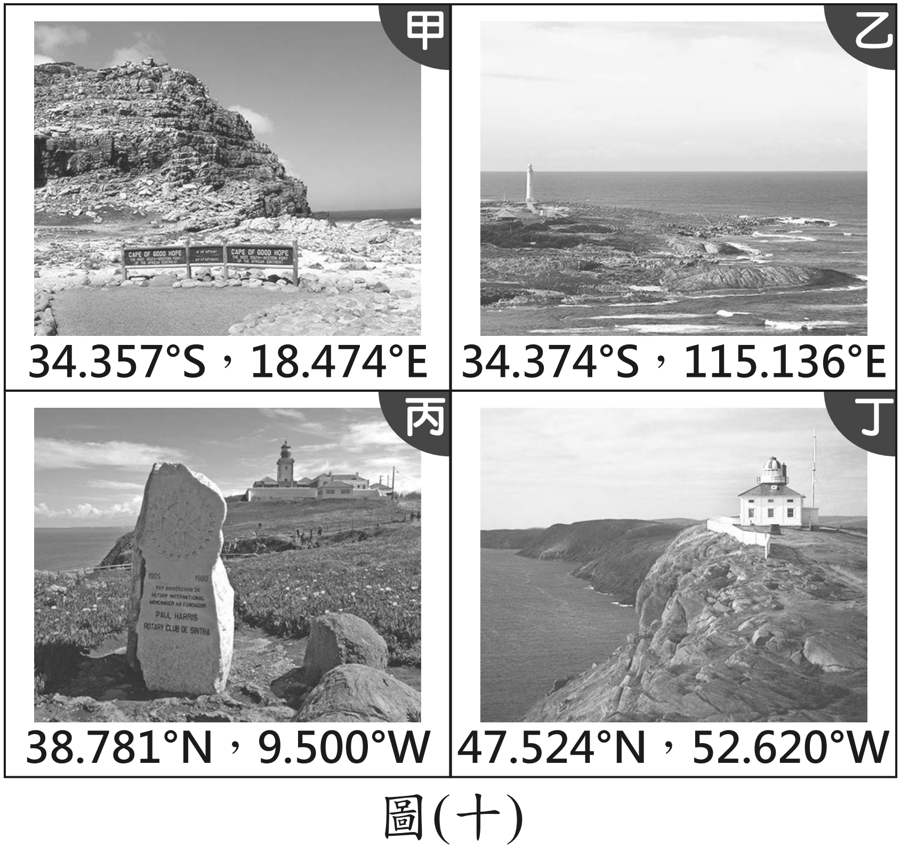
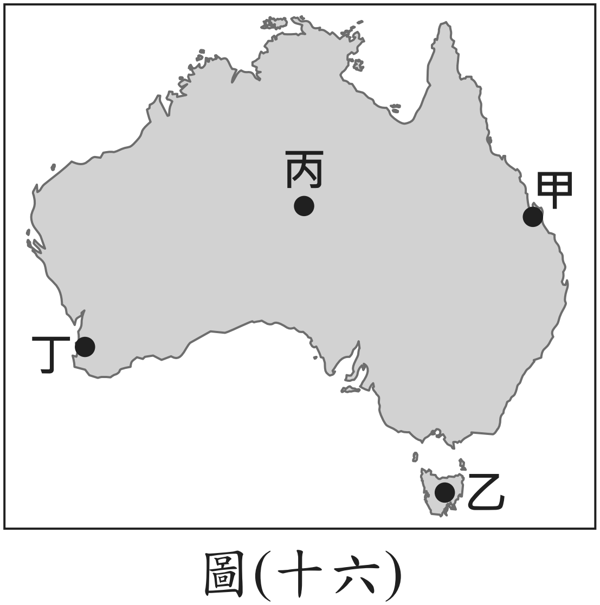
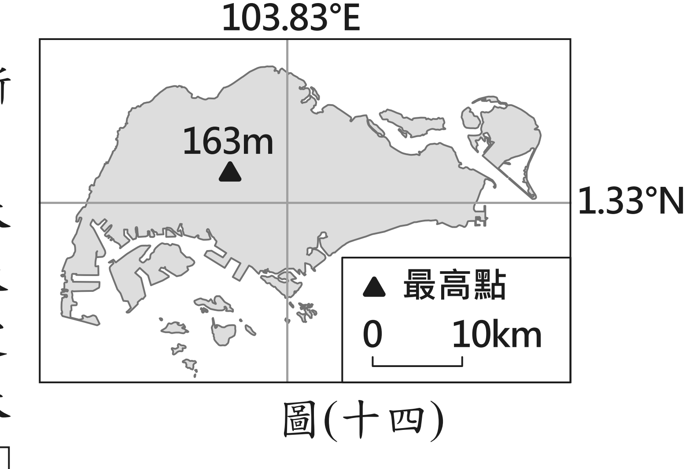

下面是全球四個著名岬角的座標。哪一個位於歐亞大陸西部海岸？

| 緯度 | 經度 | |
|---|---|---|
| 甲 | 34.357°S | 18.474°E |
| 乙 | 34.374°S | 115.136°E |
| 丙 | 38.781°N | 9.500°W |
| 丁 | 47.524°N | 52.620°W |
111 年國中教育會考社會科第 18 題。選了才會往下。
這題全國只有 42.4% 答對——是五年來七上範圍第二難的一題。
但它的錯法跟其他題不一樣：三個錯的選項各有人選，沒有哪一個特別多。 這代表大家不是被同一個陷阱騙走，而是根本沒有一套固定的方法可以用—— 只好憑印象猜。
111 年官方試題分析：通過率 0.4240。「待加強」那群只有 22.1% 答對， 誤答分散在 (D) 27.9% 與 (B) 27.7%，幾乎一樣高。
問題一：題目要找的是歐亞大陸上的地點。
歐亞大陸整個都在北半球——那麼，光看緯度那個字母，可以先刪掉誰？
甲和乙都可以刪。它們是 34.357°S 和 34.374°S——S＝南緯，在南半球。
歐亞大陸沒有任何一塊在南半球，所以這兩個一定不是。
⚡ 只看了一個字母，四個選項就少了一半。而且完全不需要知道那兩個岬角在哪裡。
問題二：剩下丙（9.500°W）和丁（52.620°W），都是西經。
西經 9.5° 和西經 52.6°，哪一個離歐洲比較近？
9.5°W 比較近。經度是從本初經線（0°）往兩邊算的—— 數字越小，離 0° 越近。
而本初經線通過英國格林威治，也就是歐洲。所以 9.5°W 就在歐洲西邊外海一點點； 52.6°W 已經跨過大西洋，到北美洲去了。
答案是 (C) 丙——葡萄牙的西岸，正是歐亞大陸的最西端一帶。
問題三：回頭看整個過程——
你需要「認得」那四個岬角的名字嗎？
完全不需要。整題只用了三件事：
① S 代表南半球 → 刪掉甲、乙
② 經度從 0° 往兩邊算，0° 在歐洲 → 9.5°W 靠歐洲、52.6°W 已到北美
③ 歐亞大陸在北半球
🔴 那 25.8% 選丁的人，多半是看到「W」就想「西邊」，覺得西經越大越西邊、越靠近歐洲西岸。 但西經越大是越往西走、離歐洲越遠——走過頭就到美洲了。
兩刀砍完，地球只剩四分之一。再看數字大小—— 緯度越大越靠近極地，經度越大離本初經線越遠——就能定位到很小的範圍。
順序很重要：先砍字母，再看數字。 先看數字的人，會被「52 比 9 大」帶著走。
兩條基準線要記牢，因為所有數字都從它們算起：
赤道（0° 緯線）——往北是 N、往南是 S，各算到 90°。課本 p.12
本初經線（0° 經線，通過英國格林威治）——往東是 E、往西是 W，各算到 180°。 東經 180° 與西經 180° 是同一條線，就是國際換日線附近。課本 p.12
🌍 這件事在球上看最清楚。經線是從極點放射出去的、緯線是一圈一圈的—— 紙上的方格圖會讓你以為它們是互相垂直的直線。
→ 打開經緯與時區地球儀 轉一轉、把格線切成 15°，看看經度是怎麼把地球切成一瓣一瓣的。
112 年第 16 題 全國 53.9% 答對；「待加強」那群只有 27.1%， 其中 33.2% 選了 (B)——比選對的還多。
某世界遺產涵蓋森林、谷地、潟湖及珊瑚礁，中心是 玻里尼西亞普遍可見的毛利集會中心。該遺產最可能位於下列何處？
答案是 (C)。用同一套砍法：
玻里尼西亞在南太平洋——所以要南緯（S），A、B 兩個 N 先刪掉。
太平洋中部在西經一帶——C 是 151°W，D 是 71°W。
而且題目說有珊瑚礁：珊瑚礁長在熱帶淺海，緯度要低。
C 是 16.8°S（熱帶內），D 是 42.9°S（溫帶，太冷）。
🔴 選 (B) 的三成，多半是被「森林、谷地」帶著走，沒去看南北緯那個字母。 49.93°N、115.43°E 是西伯利亞南部——那裡不會有潟湖和珊瑚礁。
📌 這題示範了第二層：座標不只能定位，還能反推氣候。 「有珊瑚礁」就等於「低緯度、溫暖」。課本 p.15、p.51
113 年第 29 題 全國 49.1% 答對；「待加強」那群 31.8% 選 (C)。
臺灣荔枝主要種植在中南部。政府與澳洲合作推動南半球生產計畫，
要在澳洲找氣候條件與臺灣荔枝種植地相似的地點試種。
圖中四處：甲 東北岸、南回歸線附近 乙 塔斯馬尼亞島（最南）
丙 內陸 丁 西南角

答案是 (A) 甲。臺灣中南部在北回歸線附近、靠海—— 要在南半球找對應，就要找南回歸線附近、靠海的地方。
緯度決定氣候帶，而南北半球是對稱的。北回歸線 23.5°N 的對應， 就是南回歸線 23.5°S。
其他三個為什麼不行：乙塔斯馬尼亞太南（高緯、溫帶）、 丙在內陸（乾燥）、丁西南角是地中海型氣候（夏乾）。
🔴 選 (C) 內陸的三成，是只比了緯度、忘了比距海遠近。 課本說影響氣候的因素有三個：緯度、地形、季風——緯度只是第一個。課本 p.68
114 年第 28 題 全國 62.9% 答對——相對好做，但它把這一單元收得很漂亮。
圖上是新加坡，標了經線 103.83°E、緯線 1.33°N， 以及最高點僅 163 公尺。該國積極發展某種綠色能源，最可能是哪一種？

答案是 (B)。1.33°N ——幾乎就在赤道上。
太陽直射的範圍是南北回歸線之間（23.5°S ～ 23.5°N）， 新加坡在正中央，全年太陽都接近直射，輻射強度大。課本 p.15
其他三個各被一個數字擋掉：
📌 這題等於把整個單元考了一遍：緯度→氣候帶、經度→在哪個半球、 高度→有沒有落差。圖上每一個數字都在回答一個選項。
一、先讀字母，再讀數字。
N/S 砍掉一半，E/W 再砍一半。字母能刪掉的選項，通常比數字還多。
二、緯度不只是位置，還是氣候。
低緯＝熱帶、太陽直射；中緯＝溫帶、盛行西風；高緯＝寒帶。
而且南北半球對稱——北回歸線的對面，就是南回歸線。
📖 對應課本：1-2 經緯線網格（p.12–13）、1-3 位置與生活的關聯（p.14–15，緯度與氣候）、 2-2 臺灣的位置（p.26）、5-3 臺灣的氣候特徵（p.68）。